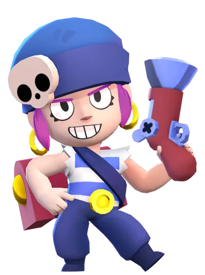
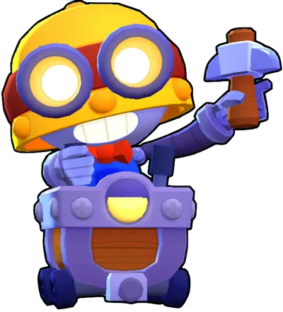
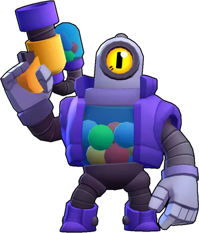
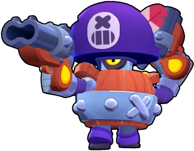
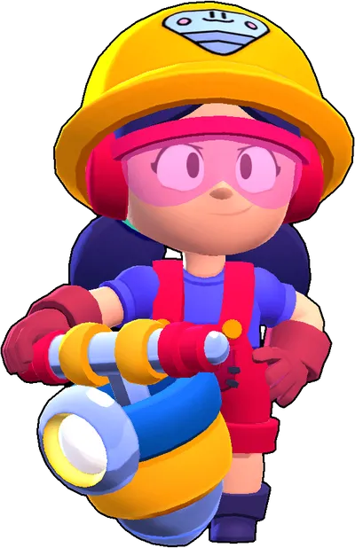

Penny es una Brawler parte de los Brawlers Superespeciales que puede colocar un mortero cuando usas su Super que tiene una salud media, un daño muy alto y puede golpear a los enemigos detrás de las paredes. Penny tiene una salud media y su ataque de largo alcance puede golpear a los enemigos detrás del objetivo original para causar daño adicional. Su primer Habilidad estelar, "Explosion final", le permite a su cañón disparar 4 balas de cañón que apuntan a objetos / luchadores dentro de un rango enorme después de ser destruidas o reaparecidas, haciendo 1680 de daño a los enemigos que son golpeados y su segunda Habilidad estelar, "Bolas de fuego", permite que sus balas de cañón incendien el suelo durante 3 segundos, lo que inflige 400 de daño por segundo a los enemigos en el área en llamas.

Carl es un robot minero parte de los Brawlers Superespeciales. Tiene una salud moderadamente alta y una producción de daño moderada. Cuando ataca, Carl golpea con su pico, dañando y atravesan a cualquier enemigo golpeado mientras el pico vuela hacia adelante o regresa a Carl, y consume su única munición que se recarga cuando el pico regresa. Su Súper lo hace girar como un loco con su pico, duplicando su velocidad de movimiento y permitiéndole dañar a los enemigos a los que se acerca durante su duración. Su primer Gadget, "Rocas volcánicas", suelta un rastro de rocas calientes detrás de él que incendia a los enemigos que las tocan. Su segundo Gadget, "Gancho remolcador", hace que el próximo ataque de Carl lo lleve al punto más lejano de su alcance. Su primer Habilidad estelar, "Lanzamiento veloz", aumenta la velocidad de su pico, disminuyendo efectivamente su tiempo de recarga. Su segunda Habilidad estelar, "Pirueta protectora", le otorga un escudo que reduce el 30% del daño cuando esta usando su Super.

Rico es un Brawler parte de los brawlers Superespeciales robot que se asemeja a una maquina expendedora de chicles. Posee un largo alcance, un potencial de daño alto y vida baja, parecido a Colt, pero con la particularidad que sus balas rebotan en las paredes y siguen viajando. Su primer Gadget, "Parque de Bolas", dispara dos ráfagas rápida de bolas hacia 8 direcciones. Su segundo Gadget, "Castillo inflable", hace que su siguiente ataque lo cure cada vez que rebote. Su primera Habilidad Estelar, "Superrebote", permite a las balas de Rico hacer más daño cuando estas rebotan en un muro. Su segunda Habilidad Estelar, "Retirada Robótica", permite a Rico moverse rápidamente cuando tiene poca vida.

Darryl es un Brawler Superespeciales que tiene mucha salud y una producción de daño alta pero inconsistente. Su Atributo ayuda a que su Súper se cargue automáticamente con el tiempo. Ataca dando escopetazos que causan un daño muy alto a corta distancia. Su Super le permite rodar una distancia corta, dañar a los enemigos, rebotar en las paredes y obtener un importante escudo de reducción de daño mientras rueda. Su primer Gadget, "Disparos 360", le permite a Darryl girar y disparar una ráfaga de tiros en todas las direcciones a su alrededor. Su segundo Gadget, "Barril de Alquitrán", ralentiza a los enemigos. Su primer Habilidad estelar, "Aros de acero", le otorga un pequeño escudo durante un par de segundos después de usar su super. Su segundo Habilidad estelar, "Recarga rodadora", duplica momentáneamente su velocidad de recarga después de usar su Super.

Jacky es una Brawler parte de los Brawlers Superespeciales que se puede conseguir en las Cajas Brawl. Tiene una salud alta y una producción de daño moderadamente alta pero inconsistente. Tiene un rasgo que le permite cargar su Super de los enemigos que la dañan. Ataca con su martillo neumático, que rompe el suelo e instantáneamente inflige daño en un área circular a su alrededor. Su Súper atrae enemigos en un gran radio. Su Gadget, "Subidón neumático", aumenta brevemente su velocidad de movimiento. Su primer Habilidad Estelar, "No hay de qué", refleja una parte del daño que recibe en un rango mediano a su alrededor. Su segunda Habilidad Estelar, "Casco blindado", reduce pasiva y levemente todo el daño que recibe durante toda la duración de la partida.